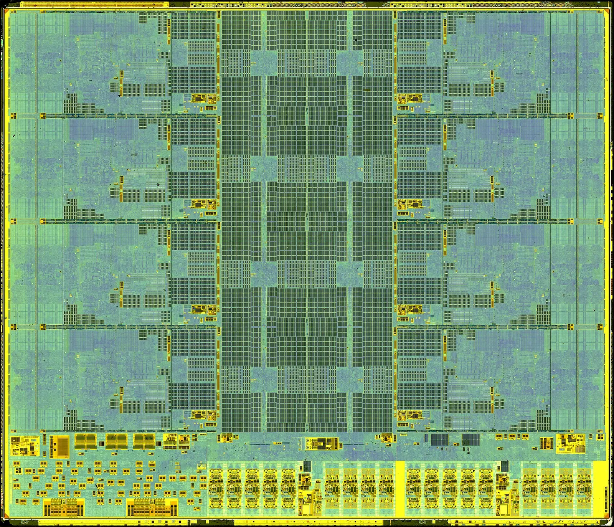
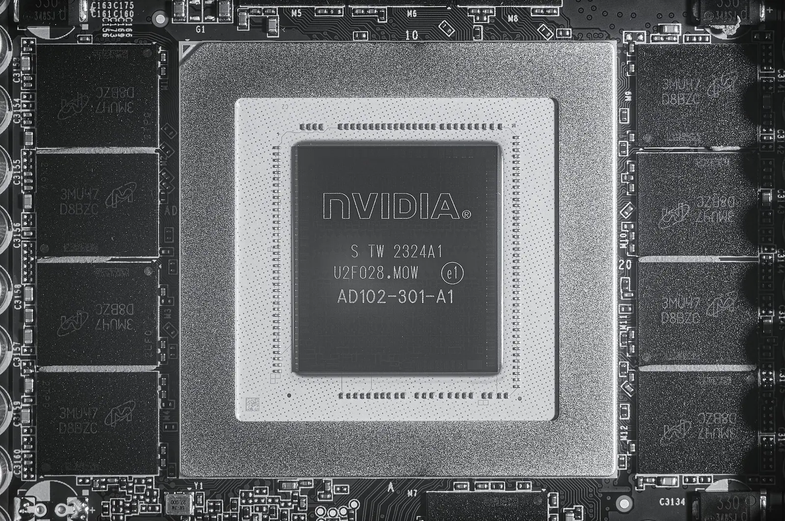
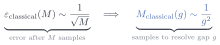
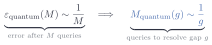
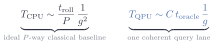
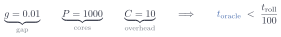

Quantum Oracle Engineering
Lesson 1: A different computer

Welcome. I’m Nishant Shukla, and this is Quantum Oracle Engineering. If you are following along live at IEEE Quantum Week 2026, this is TUT-149.
This first lesson is about developing the intuition for when a quantum computer might help, and, more importantly, recognizing when it won’t.
Controls: click the arrows, use the arrow keys, or scroll. On mobile, tap the slide or swipe.
Which move should we choose?
There’s a two-player dice game called Pig. On your turn, keep rolling a die to add points to your turn total. If you roll a 1, then your turn ends immediately with no points added. You may decide to hold, which adds your turn total to your score. First to 100.
In this example, your current score is 62, the opponent is at 71, and you’ve accumulated 12 points this turn.
What’s the optimal move? Roll again, or hold?
We want to know which wins more often.
Play one possible future
One way to find out: play it out to the end.
This is a rollout.
One rollout is one sample of the move’s payoff, under an assumption about how both players would play.
Repeat, then count wins
A common strategy is to repeat the rollouts and count the wins to figure out which move is optimal.
A hundred rollouts give you more confidence than ten.
By the way, we’ll see later that the exact win rate of “roll” is 59.6%.
This strategy is called Monte Carlo.
When is the answer clear enough?
When the problem is easy, you need fewer rollouts.
But harder problems need more rollouts, because the gap g between the expected payoffs is smaller.
Do we need the better move?
Maybe we don’t always need the best move. A good-enough one can suffice.
For a thousand games, half a point matters more.
“Assume oracle access.”
When you read research papers, the fun part is often left out!
Here is a sentence you will find in many query-model speedup papers: “Assume oracle access.”
For those unfamiliar, the “oracle” is the quantum circuit black box that we hand-wave away.
It’s like a startup saying “we’re raising Series D, but assume the product exists.”
Somebody still has to build it!
And there aren’t a lot of resources out there on practical oracles.
Three cost models

CPU
GPUEvery device has its pros and cons.
The CPU is all about minimizing latency.
The GPU accomplishes massive throughput.
For our use-case, a quantum algorithm reaches a target accuracy with fewer calls to the program.
Simulation and factoring are QPU strengths too. But, in our lessons, they are not our focus.
Mismatch costs
Top: the CPU executes the tasks one at a time, quickly.
Bottom: the tasks are loaded onto the GPU. The GPU processes with high throughput, and then the result travels back.
This is just a simple demo to dismiss the myth that “GPUs are just faster CPUs.”
What changes on a quantum computer?
A quantum computer holds amplitudes that represent probability. Once measured, one outcome comes out.
The simulator is the oracle
Here are the two access models.
A classical sampling call returns one draw X from p.
A coherent oracle A prepares the good and bad outcomes as amplitudes, and amplitude estimation must be able to reuse A and its inverse without measuring between calls.
The classical rate

Now, hit play on this demo.
The dart shoots with some variance. The spread is constant, though we eventually get a clear answer.
- Round 1: we shoot 100 darts
- Round 2: we shoot 400 darts (notice the circle halves)
- Round 3: we shoot 1,600 darts (and the circle only halves again)
The pattern? You’ll need four times the samples to halve its error.
As you x4 the number of rollouts (M), you x0.5 the error (e).
The “gap” is how far apart two candidate moves are in win rate. You can distinguish the candidate moves once your error is smaller than it.
The quantum rate

Hit run to see a representation of how a quantum computer performs rollouts.
On the right, the quantum computer does the same job coherently.
Then the estimate is measured.
For bounded outcomes at fixed confidence, amplitude estimation achieves additive error of order one over M, so resolving a gap g takes order one over g coherent queries rather than order one over g squared samples. Each call, though, is heavier.
The fine print
The quantum algorithm clearly has fewer operations, but each operation is far heavier.
So which algorithm do we go with? That takes three questions.
Btw, everything today assumes fault tolerance: no variational circuits, no NISQ demonstration, no hardware claims.
Three questions
- does the best classical method still sample?
- is precision the bottleneck?
- is the oracle worth building?
The first gate asks whether sampling is necessary.
Does a classical algorithm require sampling?
If yes, then this task randomness is a great reason to consider a QPU.
If no, then enumeration, dynamic programming, quadrature, variance reduction or a trustworthy surrogate may still remove or shrink the need for a QPU. And guess what? Most tasks get caught here.
Next, the second gate asks whether precision is the bottleneck.
The first gate (randomness) on its own is not enough.
The task has to force differences so small that telling them apart is the hard part.
Lastly, the third gate is about the cost (in terms of time) of executing the oracle on a quantum machine.
Every quantum query has to be cheap enough to cover its own cost.
The gates help organize our thoughts, so we know when to apply quantum computing.
A deterministic world
Tic-tac-toe is a game with no innate randomness.
When X reaches for the best available move, then O reaches for the worst available for X.
The rules and state are deterministic and known.
On the other hand, Go is also deterministic but since it is a 19x19 board, the number of legal positions blows up. The game tree is HUGE. It’s tempting to reach out for a QPU, but that’s a trap!
Pig, solved
Pig does not need rollouts either. Its 505,000 positions fit in a table, and dynamic programming fills it with the exact win rate of every move (Neller and Presser, 2004). Blue is roll, grey is hold, for one opponent score.
Another classical solver trick is to use transposition tables, which memorize different move orders that reach the same position. The learned value functions score a position without much effort.
For example, checkers was weakly solved with enormous search and endgame databases.
Nim has a closed form.
Connect Four is solved.
AlphaZero learned its own priors and values without solving Go.
Classical structure has eliminated sampling or reduced search in one domain after another.
Whose dice?
On the left, randomness belongs to the task.
On the right, randomness belongs only to the chosen solver.
Solver dice are a warning that another classical algorithm may remove the sampling.
Task dice make the problem a better quantum candidate.
When sampling stays
Even when the randomness belongs to the task, sampling is not automatic.
If the state space is small enough to enumerate, dynamic programming computes the expectation outright.
In low dimensions, quadrature solves it without any need for a QPU.
Also, a learned approximator can skip the expectation altogether.
Depth!
When the state space explodes, enumeration is hard!
Quadrature dies in high dimensions.
Approximator bias is hard to bound over a long horizon.
That is the regime where sampling is the last resort standing, and that regime is the opening.
The diagnostic
In summary, the first gate was all about “does sampling still dominate after considering the strongest classical reformulation.”
The cost, itemized
Compare the 3 gaps (g).
Gray = classical. Blue = quantum.
If your task requires distinguishing a small gap, quantum may help. Precision is the bottleneck when the gap is small and the rate itself is what you need, as on slide 6.
Enough evidence to choose?
A prediction. Two moves, a hundred rollouts each. Do we have enough evidence to choose? Hands up for roll, for hold, for “not yet.”
Then the reveal at ten thousand, and the exact values. Overlapping bars mean the sampled order can be wrong, and the bars said so.
The classical counterpunch
One more thing before we move on.
Independent rollouts parallelize beautifully.
In an optimistic baseline with perfect scaling, a thousand cores divide the sampling time by a thousand.
Sure, there’s overhead in scheduling, communication and management, but using the optimistic classical baseline makes the quantum comparison harder to game.
Every classical worker raises the bar for the QPU to clear.
The second diagnostic
Does the gap drive the cost?
A wide gap: a few hundred rollouts settle it, so stop, no quantum computer needed.
A tiny gap: the samples pile up, so keep going.
The rollout query
This is the unitary behind one coherent oracle call.
It prepares the stochastic choices, runs the full rollout reversibly, and encodes the payoff in an amplitude.
Amplitude estimation reuses this operation and its inverse.
An oracle can be heavy
Left: the data has to be loaded first. A million records in is already a classical scan, so the square root buys nothing.
Right: nothing is loaded. The rule is computed, and a thousand calls to it is practically nothing.
Rules that compile
Simple rules yield simple circuits.
In this diagram, the cell updates by reading its four orthogonal neighbors.
Local rules like that compile to a circuit that stays regular and shallow.
Three things make that circuit expensive.
- The dynamics have to become reversible.
- The scratch work has to be uncomputed.
- And the randomness has to live inside the circuit, in qubits you prepared yourself.
Rules that tangle
In this example, the game rules reach across the whole board (and that dashed line going backwards is a read into earlier positions, which is what history-dependent legality means).
See what happened to the circuit. It did not just get a little worse, it got wider and deeper at the same time, and this is one step of one rollout.
This is where oracle cost eats the speedup you came for.
So the balance is an optimization problem.
On one side, a QPU saves you time by requiring fewer samples.
On the other, executing the coherent query could itself be costly.
When a classical sample costs nanoseconds, realistic quantum overhead is unlikely to win at practical gaps.
But no fixed overhead defeats a quadratic query advantage at every scale: when rollouts are expensive and the required gap is tiny enough, the balance can tip.
The third diagnostic
Is one coherent query cheap?
Local rules that compile and nothing loaded from a database: worth costing out.
Tangled rules or a data load: stop, the oracle eats the speedup.
Winning queries, losing the clock
On the left, a mountain of cheap samples through a wide throat.
On the right, fewer, heavier queries through one coherent query lane.
Which machine finishes first?

Predicting speed of computation is a valuable skill.
Classically, one rollout costs t roll and an optimistic perfectly parallel baseline lets P cores divide the sampling time; resolving the gap costs one over g squared samples.
On the one-lane quantum side, one coherent query costs t oracle, amplitude estimation adds the overhead C, and resolving the same gap costs one over g queries.
The picture underneath is why these baseline expressions have different shapes: classical work goes wide across ordinary cores; this coherent query chain goes long.
Neither lane finishes because the resource choices decide the winner.
Break-even

The QPU wins when the time for one oracle call is less than the time for one rollout, divided by the overhead, by the number of classical cores, and by the gap.
Smaller gaps grow the right-hand side, so the QPU can afford slower queries.
More classical cores shrink it, so the bar rises.
A hundred times faster

Plug in a one-percent gap, a thousand classical cores, and an overhead of ten.
One coherent rollout must finish a hundred times faster than a classical rollout on a single core.
Fault-tolerant gates run far slower than CPU cycles, so for ordinary AI search the answer is no.
Lesson 2 moves the knobs until it isn’t.
Apply the three questions
You have a solid toolkit: the three questions and one inequality.
Not too exotic, eh?
Two problems on the belt: a chess engine’s move stops at gate one (deterministic, solver dice); an epidemic on a network passes all three and is worth costing out.
The dominoes
Five ways these arguments go wrong, and I have made some of them myself.
- A weak classical baseline.
- Query counts quoted as though they were runtimes.
- Oracle cost swept under the rug by three words.
- Solver randomness dressed up as an inherent sampling bottleneck.
- And parallel resources ignored on either side.
Tang’s result is the canonical warning about the first: match the input model before celebrating the algorithm. The three questions and the wall-clock model catch all five.
In 2016 there was a celebrated quantum algorithm for recommendation systems.
In 2018 Ewin Tang, then an undergraduate, gave a classical analogue that was only polynomially slower under comparable strong length-square sampling access.
That removed the claimed exponential separation, and related dequantization work spread to neighboring low-rank linear-algebra claims.
It was a domino effect of many results tipping each other over.
In this diagram, the slab on the right takes the same shock and holds because those query separations are proved inside their stated oracle models. Though, advantage on the wall clock still has to cover the cost of implementing the model.
A different computer
Today’s lesson ends here.
Next, lesson 2 identifies a problem worth solving.
Lessons 3 through 7 build the oracle, make it reversible, clean its garbage, measure safely, and borrow memory without breaking promises.
Lesson 8 makes separately written blocks trustworthy together.
Lessons 9 through 11 locate where the quantum advantage lives, account for its coherent memory, and turn that cost into a test.
Lesson 12 brings the three questions and the wall-clock math back to the next AI miracle.
The address
Click the link to open Lesson 2.
Further reading: parallel amplitude estimation trades coherent depth for entangled width, connectivity, and memory (Oshio, Wada, and Yamamoto, 2026). And the break-even inequality holds whatever BQP versus BPP turns out to be.